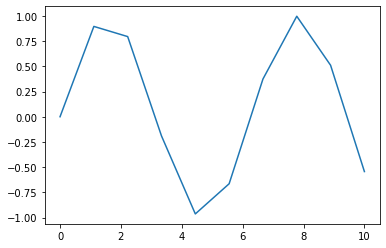
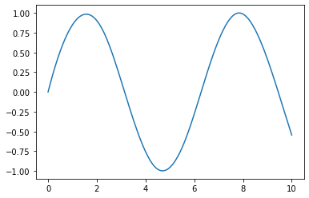

Hallo Jupyter Notebook¶
[1]:
print('hello world')
hello world
Syntax¶
[2]:
print('ein statement')
ein statement
[3]:
print('ein statement'); print('noch ein statement');
ein statement
noch ein statement
[4]:
print('ein statement')
print('noch ein statement')
ein statement
noch ein statement
Strings¶
[5]:
s = 'ein string'
print(s)
ein string
[6]:
s
[6]:
'ein string'
[7]:
s = "auch ein string"
s
[7]:
'auch ein string'
[8]:
s = 'ein string mit einem "'
s
[8]:
'ein string mit einem "'
[9]:
s = "ein string mit einem '"
s
[9]:
"ein string mit einem '"
[10]:
s = "ein string mit einem \""
s
[10]:
'ein string mit einem "'
[11]:
s = """
eine string mit:
einer zeile
noch einer zeile
und noch ein paar zeilen
"""
s
[11]:
'\neine string mit:\neiner zeile\nnoch einer zeile\nund noch ein paar zeilen\n'
[12]:
print(s)
eine string mit:
einer zeile
noch einer zeile
und noch ein paar zeilen
[13]:
s = "eine string mit:\neiner zeile\nnoch einer zeile\nund noch ein paar zeilen"
s
[13]:
'eine string mit:\neiner zeile\nnoch einer zeile\nund noch ein paar zeilen'
[14]:
print(s)
eine string mit:
einer zeile
noch einer zeile
und noch ein paar zeilen
NB: jupyter notebook stoppt bei exceptions
[15]:
try:
s = "ein string mit einem newline\ndrin"
print(s)
except Exception as e:
print(e)
ein string mit einem newline
drin
[16]:
print('schauma')
schauma
[17]:
int('42')
[17]:
42
[18]:
try:
int('xyz')
except Exception as e:
print(e)
invalid literal for int() with base 10: 'xyz'
[19]:
print('schauma wieder')
schauma wieder
Raw strings¶
[20]:
s = "das ist ein String mit einem \\"
[21]:
s = r"das ist ein String mit einem \n"
[22]:
s
[22]:
'das ist ein String mit einem \\n'
Variablen¶
Was passiert, wenn man Typen zuviel mischt?
[23]:
a = 42
[24]:
type(a)
[24]:
int
[25]:
b = 6.66
type(b)
[25]:
float
[26]:
c = a + b
c
[26]:
48.66
[27]:
type(c)
[27]:
float
[28]:
d = [1, 'liste']
[29]:
try:
c = a+d
except Exception as e:
print(e)
unsupported operand type(s) for +: 'int' and 'list'
Tuple Unpacking¶
Was ist ein Tuple?
[30]:
l = [1,2,3]
[31]:
l.append(4)
l
[31]:
[1, 2, 3, 4]
[32]:
t = (1,2,3)
[33]:
try:
t.append(4)
except Exception as e:
print(e)
'tuple' object has no attribute 'append'
[34]:
a, b, c = 1, 2, 3
print(a, b, c)
1 2 3
[35]:
(a, b, c) = (1, 2, 3)
print(a, b, c)
1 2 3
[36]:
def f():
return 1, "eins"
[37]:
a, b = f()
[38]:
print(a, b)
1 eins
Was hat das ganze mit print() zu tun?
[39]:
a, b, c
[39]:
(1, 'eins', 3)
[40]:
d = 666
[41]:
print("die werte sind:", a, b, c, d)
die werte sind: 1 eins 3 666
Speicher, Memory Management¶
[42]:
a = 42
id(a)
[42]:
140546731085392
[43]:
hex(id(a))
[43]:
'0x7fd395fb0e50'
[44]:
b = a
[45]:
hex(id(b))
[45]:
'0x7fd395fb0e50'
[46]:
a = 666
hex(id(a))
[46]:
'0x7fd3900395b0'
[47]:
hex(id(b))
[47]:
'0x7fd395fb0e50'
Datatypes¶
[48]:
s = 'abc'
type(s)
[48]:
str
[49]:
i = 42
type(i)
[49]:
int
[50]:
s = str(i)
s
[50]:
'42'
[51]:
bool(20)
[51]:
True
[52]:
bool(0)
[52]:
False
[53]:
t = (1, 2, 3)
new_t = t + (4,5)
[54]:
t
[54]:
(1, 2, 3)
[55]:
new_t
[55]:
(1, 2, 3, 4, 5)
[56]:
t = new_t
t
[56]:
(1, 2, 3, 4, 5)
Mutable vs. Immutable¶
[57]:
l1 = [1,2,3]
[58]:
l1
[58]:
[1, 2, 3]
[59]:
hex(id(l1))
[59]:
'0x7fd390052800'
[60]:
l2 = l1
l2
[60]:
[1, 2, 3]
[61]:
l1.append(4)
l1
[61]:
[1, 2, 3, 4]
[62]:
l2
[62]:
[1, 2, 3, 4]
[63]:
l1[1] = 3
[64]:
l2
[64]:
[1, 3, 3, 4]
[65]:
l1 = 3
[66]:
l2
[66]:
[1, 3, 3, 4]
[67]:
l3 = l2
[68]:
l3
[68]:
[1, 3, 3, 4]
[69]:
l2 = [3,4,5]
[70]:
l3
[70]:
[1, 3, 3, 4]
Wie schütze ich mich davor?¶
[71]:
orig = [1,2,3,4]
Slicing (kommt noch)
[72]:
orig[1:3]
[72]:
[2, 3]
[73]:
orig[1:4]
[73]:
[2, 3, 4]
[74]:
orig[1:len(orig)]
[74]:
[2, 3, 4]
[75]:
orig[1:]
[75]:
[2, 3, 4]
[76]:
orig[1:5]
[76]:
[2, 3, 4]
[77]:
orig[0:3]
[77]:
[1, 2, 3]
[78]:
orig[:3]
[78]:
[1, 2, 3]
[79]:
orig[:]
[79]:
[1, 2, 3, 4]
Aber!!!!¶
[80]:
orig = [1,2,[3,4],5]
[81]:
copy = orig[:]
copy
[81]:
[1, 2, [3, 4], 5]
[82]:
copy[2]
[82]:
[3, 4]
[83]:
copy[2][1] = 666
[84]:
copy
[84]:
[1, 2, [3, 666], 5]
[85]:
copy[0] = 667
Was ist copy?
[86]:
copy
[86]:
[667, 2, [3, 666], 5]
Was ist orig?
[87]:
orig
[87]:
[1, 2, [3, 666], 5]
Dictionary¶
[88]:
lookup = {
'one': 1,
'two': 2,
}
[89]:
lookup['one']
[89]:
1
[90]:
lookup['three'] = 3
[91]:
lookup['three']
[91]:
3
[92]:
del lookup['three']
[93]:
try:
lookup['three']
except Exception as e:
print(e)
'three'
[94]:
hash(42)
[94]:
42
[95]:
hash('hallo')
[95]:
-2923750584022716461
[96]:
hash((1,2,3))
[96]:
529344067295497451
[97]:
try:
hash([1,2,3])
except Exception as e:
print(e)
unhashable type: 'list'
[98]:
value = lookup.get('four')
[99]:
print(value)
None
[100]:
for k, v in lookup.items():
if v == 2:
print(k)
two
Exercise: Liste von gemischten Datentypen¶
[101]:
l = []
l
[101]:
[]
[102]:
l = list()
l
[102]:
[]
[103]:
l = [1, 2, 'drei']
l
[103]:
[1, 2, 'drei']
Eine leere Liste
[104]:
l = []
[105]:
l.append(42)
l.append(42.666)
l.append(True)
l
[105]:
[42, 42.666, True]
[106]:
l.extend([1, 2, 3])
l
[106]:
[42, 42.666, True, 1, 2, 3]
[107]:
l.append(['eins', 2])
l
[107]:
[42, 42.666, True, 1, 2, 3, ['eins', 2]]
[108]:
l.append((4, 'vier'))
l
[108]:
[42, 42.666, True, 1, 2, 3, ['eins', 2], (4, 'vier')]
[109]:
try:
l[7].append(666)
except Exception as e:
print(e)
'tuple' object has no attribute 'append'
[110]:
try:
l[7][1] = 'fuenf'
except Exception as e:
print(e)
'tuple' object does not support item assignment
[111]:
l.append({3, 'drei', 3.0})
l
[111]:
[42, 42.666, True, 1, 2, 3, ['eins', 2], (4, 'vier'), {3, 'drei'}]
Nebenbei: 3.0 wird hier verschluckt
[112]:
hash(3) == hash(3.0)
[112]:
True
[113]:
l.append({'eins': 'one', 'zwei': 'two'})
l
[113]:
[42,
42.666,
True,
1,
2,
3,
['eins', 2],
(4, 'vier'),
{3, 'drei'},
{'eins': 'one', 'zwei': 'two'}]
Konstruktoren¶
[114]:
t = tuple([1, 2, 3])
t
[114]:
(1, 2, 3)
[115]:
t = tuple('abcd')
t
[115]:
('a', 'b', 'c', 'd')
[116]:
t = tuple('111')
t
[116]:
('1', '1', '1')
[117]:
t = tuple(['1', '11'])
t
[117]:
('1', '11')
[118]:
s = set('abc')
s
[118]:
{'a', 'b', 'c'}
[119]:
s = set([1, 2, 3, 4])
s
[119]:
{1, 2, 3, 4}
[120]:
3 in s
[120]:
True
[121]:
111 in s
[121]:
False
[122]:
d = dict([("one", "eins"), ("two", "zwei")])
d
[122]:
{'one': 'eins', 'two': 'zwei'}
Tag 2: Wiederholung, Fragen¶
Frage: was ist der Unterschied zwischen set und tuple?
[123]:
s = {}
type(s)
[123]:
dict
[124]:
s = set()
type(s)
[124]:
set
[125]:
s = {1, 'eins', 'one'}
[126]:
t = (1, 'eins', 'one')
[127]:
s
[127]:
{1, 'eins', 'one'}
[128]:
s.add(1)
s
[128]:
{1, 'eins', 'one'}
[129]:
s.add(2)
[130]:
s
[130]:
{1, 2, 'eins', 'one'}
[131]:
1 in s
[131]:
True
[132]:
if 1 in s:
print('hurra')
hurra
[133]:
t
[133]:
(1, 'eins', 'one')
[134]:
t[0]
[134]:
1
[135]:
t[1]
[135]:
'eins'
[136]:
try:
t.append(666)
except Exception as e:
print(e)
'tuple' object has no attribute 'append'
[137]:
if 1 in t:
print('hurra')
hurra
Die range() Funktion
[138]:
for i in range(5):
print(i)
0
1
2
3
4
[139]:
i = 0
while i < 5:
print(i)
i += 1
0
1
2
3
4
for und range()¶
[140]:
for element in [0, 1, 2, 3, 4, 5]:
print(element)
0
1
2
3
4
5
Das gleiche wie oben, nur dass keine fette Liste mit 6 (oder 6000000) Elementen im Memory alloziert wird. Man will ja nur eine Zahl nach der anderen.
[141]:
for element in range(6):
print(element)
0
1
2
3
4
5
[ ]:
[142]:
for element in [3, 500, 2, 33, 4, 6]:
print(element)
3
500
2
33
4
6
Objektidentität¶
[143]:
a = 42
id(a)
[143]:
140546731085392
[144]:
hex(id(a))
[144]:
'0x7fd395fb0e50'
[145]:
b = a
hex(id(b))
[145]:
'0x7fd395fb0e50'
[146]:
a is b
[146]:
True
[147]:
a == b
[147]:
True
[148]:
l1 = [1, 2, 3]
l2 = l1
id(l1) == id(l2)
[148]:
True
[149]:
l2 = [1, 2, 3]
[150]:
l1 == l2
[150]:
True
[151]:
l1 is l2
[151]:
False
[152]:
l1.append(4)
[153]:
l1
[153]:
[1, 2, 3, 4]
[154]:
l2
[154]:
[1, 2, 3]
[155]:
d = {
'one': 1,
'two': 2,
}
[156]:
d['one']
[156]:
1
[157]:
try:
d['three']
except Exception as e:
print(repr(e))
KeyError('three')
[158]:
value = d.get('one')
[159]:
value
[159]:
1
[160]:
value = d.get('three')
[161]:
print(value)
None
[162]:
type(value)
[162]:
NoneType
[163]:
if value is None:
print('jessas')
jessas
[164]:
NoneType = 42
[165]:
type(None)
[165]:
NoneType
[166]:
type(type(NoneType))
[166]:
type
[167]:
type(NoneType)
[167]:
int
[168]:
NoneType = type(None)
[169]:
type(NoneType)
[169]:
type
Das with Statement¶
[170]:
f = open('/etc/passwd')
type(f)
[170]:
_io.TextIOWrapper
[171]:
f.close()
[172]:
with open('/etc/passwd') as f:
# do something with f
print(f.readline())
# f closed automatically by "context manager"
root:x:0:0:root:/root:/bin/bash
[173]:
try:
f.readline()
except Exception as e:
print(e)
I/O operation on closed file.
Tuple Unpacking, Dictionary Iteration¶
[174]:
d = {
'one': 1,
'two': 2,
}
[175]:
for x in d:
print(x)
one
two
[176]:
for key in d.keys():
print(key)
one
two
[177]:
for value in d.values():
print(value)
1
2
[178]:
for ois in d.items():
print(ois)
('one', 1)
('two', 2)
[179]:
for ois in d.items():
print(ois)
print('key:', ois[0])
print('value:', ois[1])
('one', 1)
key: one
value: 1
('two', 2)
key: two
value: 2
[180]:
for k, v in d.items():
print('key:', k)
print('value:', v)
key: one
value: 1
key: two
value: 2
String Operationen¶
[181]:
s = '123,456'
[182]:
s.replace(',', '.')
[182]:
'123.456'
[183]:
s
[183]:
'123,456'
[184]:
s = s.replace(',', '.')
[185]:
time = float(s)
time
[185]:
123.456
enumerate(), und verlorene Indices¶
[186]:
l = [8, 4, 1, 90, 5]
for elem in l:
print(elem)
8
4
1
90
5
Ignorieren der Elemente 0 und 3 … hm?
[188]:
i = 0
for elem in l:
if i == 0 or i == 3:
i += 1
continue
print(elem)
i += 1
4
1
5
[189]:
for i in range(len(l)):
if i == 0 or i == 3:
continue
print(l[i])
4
1
5
[190]:
for i, elem in enumerate(l):
if i == 0 or i == 3:
continue
print(elem)
4
1
5
[191]:
for xxx in enumerate(l):
print(xxx)
(0, 8)
(1, 4)
(2, 1)
(3, 90)
(4, 5)
NumPy, matplotlib¶
[195]:
import numpy as np
import matplotlib.pyplot as plt
Was heisst das?
[193]:
import sys
sys.version
[193]:
'3.9.2 (default, Feb 20 2021, 00:00:00) \n[GCC 10.2.1 20201125 (Red Hat 10.2.1-9)]'
[194]:
import sys as hansi
hansi.version
[194]:
'3.9.2 (default, Feb 20 2021, 00:00:00) \n[GCC 10.2.1 20201125 (Red Hat 10.2.1-9)]'
So, jetzt aber los:
[196]:
x = np.linspace(0, 10, 10)
x
[196]:
array([ 0. , 1.11111111, 2.22222222, 3.33333333, 4.44444444,
5.55555556, 6.66666667, 7.77777778, 8.88888889, 10. ])
[197]:
y = np.sin(x)
y
[197]:
array([ 0. , 0.8961922 , 0.79522006, -0.19056796, -0.96431712,
-0.66510151, 0.37415123, 0.99709789, 0.51060568, -0.54402111])
[198]:
plt.plot(x, y)
[198]:
[<matplotlib.lines.Line2D at 0x7fd35cd3ef40>]

Interpolation mittels scipy¶
[199]:
from scipy.interpolate import splev, splrep
Spline Representation: splrep
[201]:
spl = splrep(x, y)
Spline Evaluation: splev
[202]:
x2 = np.linspace(0, 10, 200)
y2 = splev(x2, spl)
[203]:
plt.plot(x2, y2)
[203]:
[<matplotlib.lines.Line2D at 0x7fd341a486d0>]

[ ]: